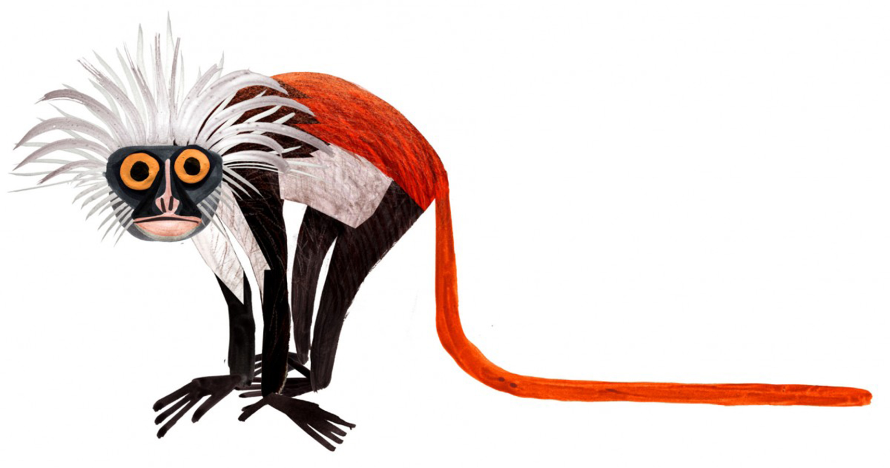

Week 7
Midterm Proposal: Designing for the Cotton-Top Tamarins

From futher reaserch on the Cotton Top Tamarins, we learned that they are highly intelligent and have very constructive communication skills. They are very senstive two sounds and can make 38 different types of calls to express and communicate with each other. In addition, they are also able to process natural language logic and have strong patter recognition skills.
[Click Here to View Full Research Paper]
On Design Process: various design methods
AEIOU
Behaviour Mapping
Brain Storming

Design Proposal

Utalizing sound, pattern recognition with rewarding feedback to provoke foraging behavior
Based on our research and observation at the Central Park Zoo: We learned that theres incrediblly intelligent creatures are able to recognize sound patterns, andthe zoo keeper usually trains them with rewarding treats after they successfully accomplish certain tasks.
Therefore in our proposal, we would like to utalize both of their communication advantage as well as the training mechanism to help them regain their foraging skills. According to our research, the Cotton-Top Tamarins\' diet includes mostly friuts and insects. Occationally they would also consume reptiles. However, it is crutial for them to have a high-quality, high-energy diet because of their smallbody size, gut volume, and rapid rate of food passage.
In fact they spend most of their time on finding food sources. Mostly by stealth, turning over leaves, exploring crevices, or pouncing. However, since they are currently critically endangered, it is most likey they will be in captivity such as zoos. Nonetheless, in a zoo setting, from my previous and limited observation, they do not seem to have the oppertunity to go around foraging and digging for food but being fed.
Our goal is then, to promote their "hunting" behavior by utalizing thier sound sensitivity and pattern recognition skills

We will have multiple log look-a-like devices hanging from the branches in thier home. Each device will have a small speaker inside programmed to have different sound patterns (based on pitches and duriation). In addtion, each log will have three hole filled with food, plants and soil mixture. The holes will have a mechanic turning door, and the doors are set to be closed by default. There will be another speaker planted in their living enviorment. Each log will then play its sound at a set time, and at a selected time, the room speaker will play one of the sound pattern that matches one of the log. The log with the corresponding sound patter will then open the doors. If the tamarins can succssfullt locate the log, they will be able to dig into it for treats.